鄧鈺臻
Portfolio
DENG, YU-ZHEN
元智大學資傳系 設計組
個性內斂，對於周遭的人事物有著細膩的觀察力，也因此培養出良好的同理心，能站在不同角度理解他人的想法與情緒。平時透過聽音樂與閱讀來沉澱自己，在歌詞與旋律中獲得療癒與安定。
這些興趣影響了我在設計方面的思考，使我更重視情感傳達與使用者感受，並希望將觀察力與同理心轉化為有溫度、能引起共鳴的作品，讓設計成為溝通與理解的橋樑。
平面設計 Graphic Design
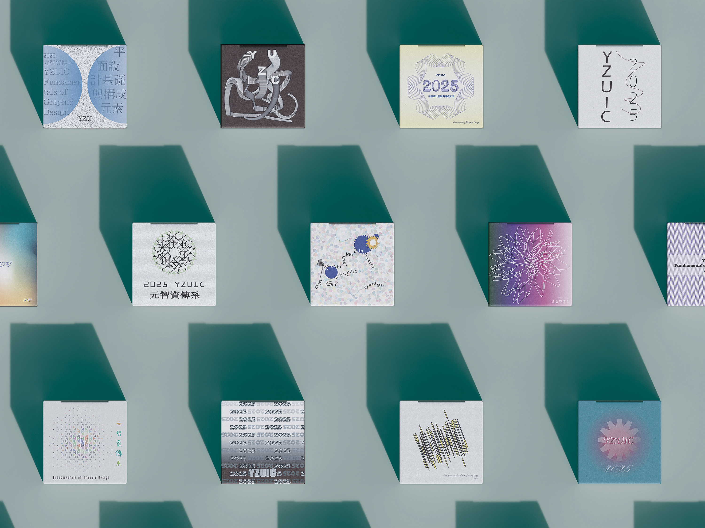
元智資傳系封面設計
2025結合平面設計基本原則與構成元素，以「2025 YZUIC」為主題發想。運用扭曲與變形效果增加視覺變化。
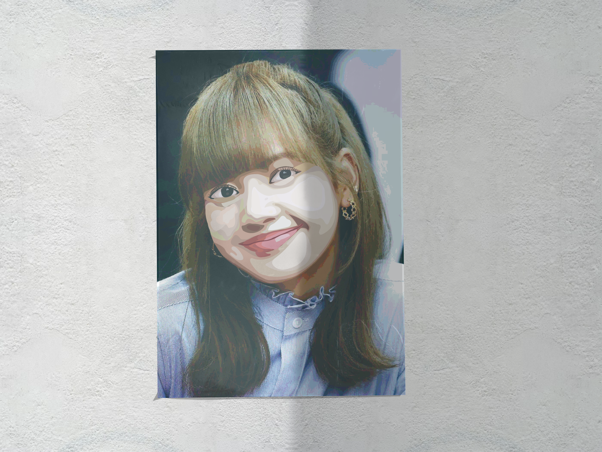
色調分離 (LISA)
2025以 LISA 臉部為主角的色調分離練習作品。透過層次處理熟練掌握鋼筆工具的運用與色彩搭配。
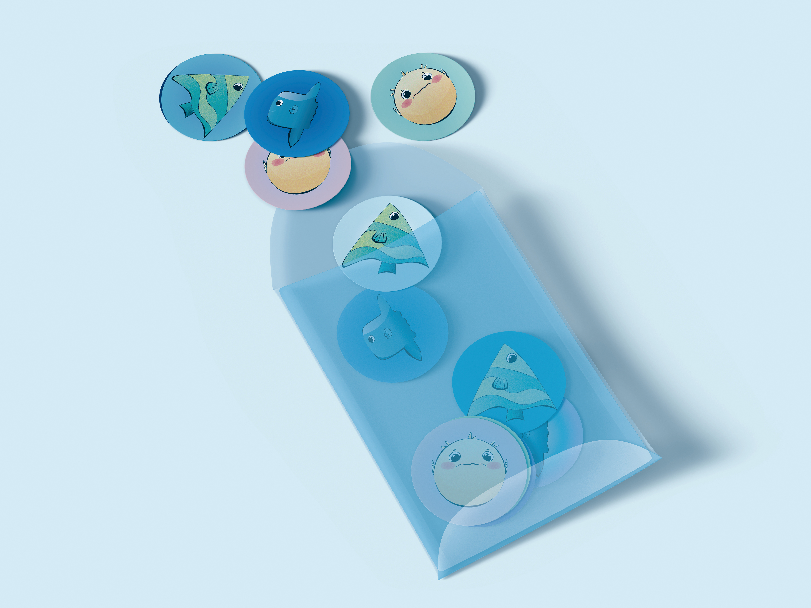
海洋主題造型設計
2025限制角色由幾何圖形(圓形、方形、三角形)組成，挑戰在限制中表現海洋生物特色，並模擬實體貼紙效果。
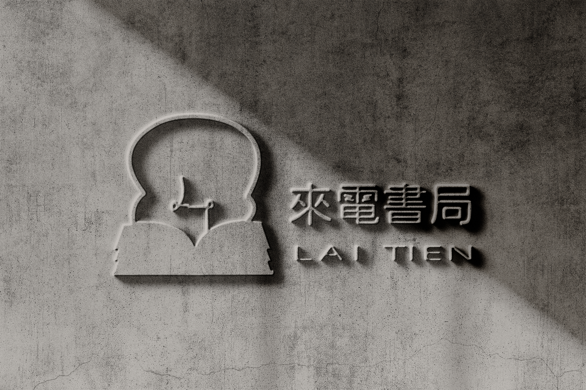
來電書局品牌與周邊設計
原LOGO優化專案。以「電線、燈泡、書籍」為主要元素，運用活潑黃藍色系吸引中小學生受眾。結合字母L與T的燈絲設計，營造翻書與來電的意象。
周邊應用：名片、招牌、筆記本、帆布袋、紙膠帶、識別證等。
設計理念：將黃藍相間的和風花紋裝飾應用於周邊，為校園生活注入滿滿的電力與活力。
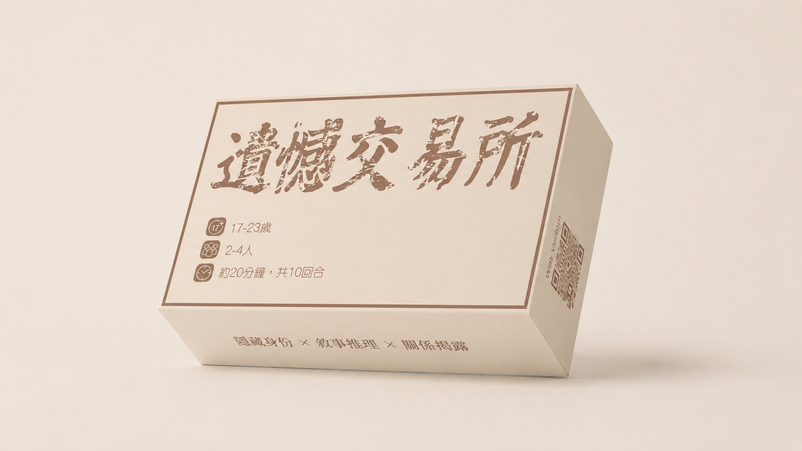
遺憾交易所
2026跨媒體整合課程桌遊設計。探索「遺憾如何影響人生」，透過故事拼接與情緒轉化，引導玩家反思。
UI/UX 設計
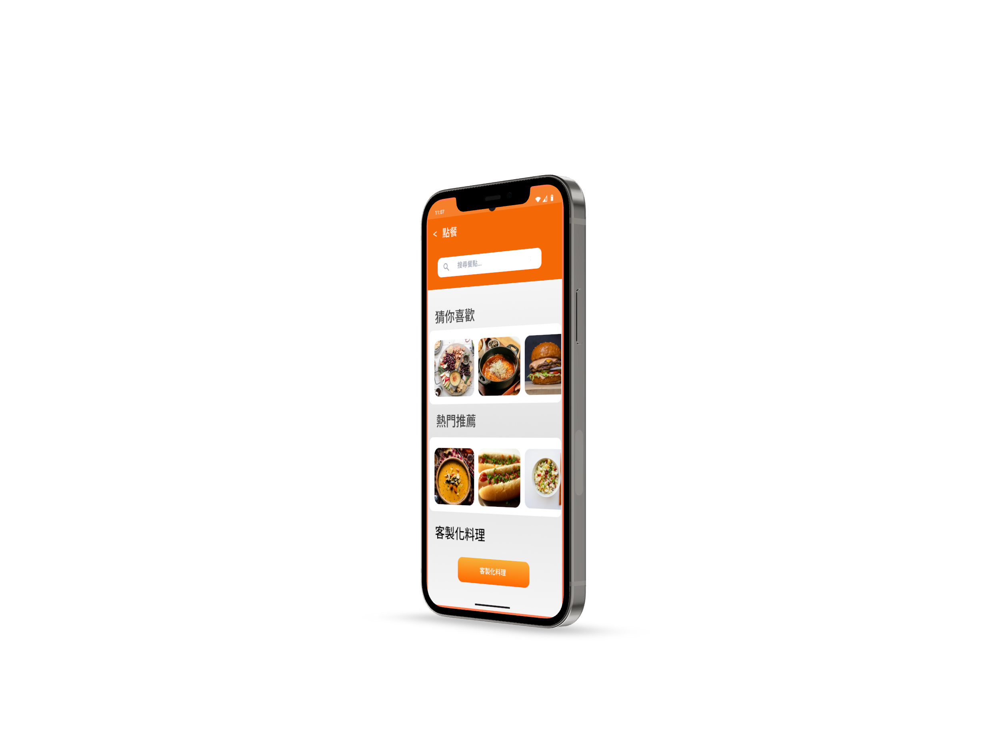
CookOS App
2050 未來飲食導引系統
針對高壓生活設計，結合「料理打印機」與「生物晶片」的未來願景。AI整合個人偏好與即時生理狀態，提供智慧點餐與長期飲食規劃。
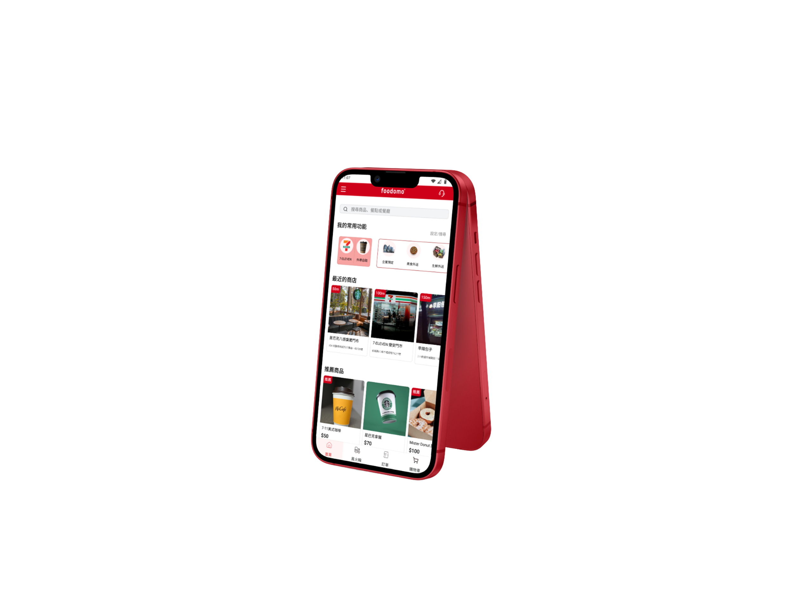
Foodomo App (Redesign)
外送平台介面優化專案
針對原 App 操作不流暢、分類結構繁雜及購物車限制等痛點進行重新設計，縮小廣告干擾，提升整體點餐轉換率與體驗。
痛點解決：建立「多店購物車清單」解決無法跨店查看的問題。
架構優化：優化商品篩選介面，減少層級，讓常用商品更快速被找到。
視覺優化：重新建立 Design System (Color Tokens, Spacing, Buttons) 確保介面一致性。
網頁設計 Web Design
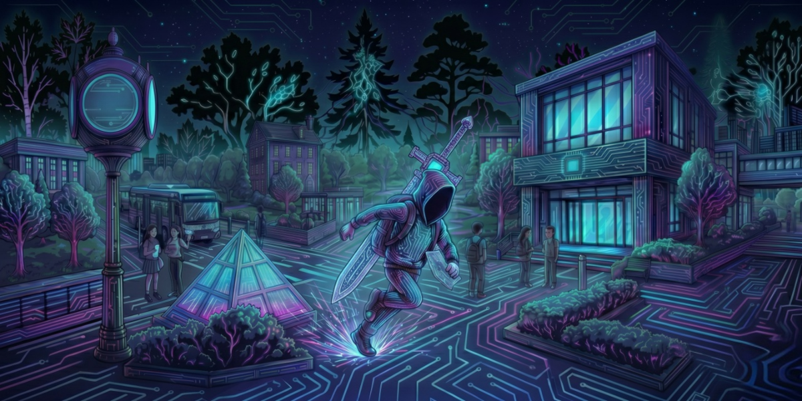
元智大逃亡 網頁遊戲
網頁程式設計以元智大學校園為背景的快節奏橫向卷軸動作跑酷遊戲。轉化學業壓力為具象化的陷阱攻擊，讓玩家在遊戲中體驗躲避壓力的快感。
- 使用 Phaser 3 / p5.js 進行程式框架搭建。
- 結合現代寫實與賽博龐克風格的異化夢境場景。
- 負責區塊：美術設計（精靈圖動畫、技能特效、海報）及音樂風格。
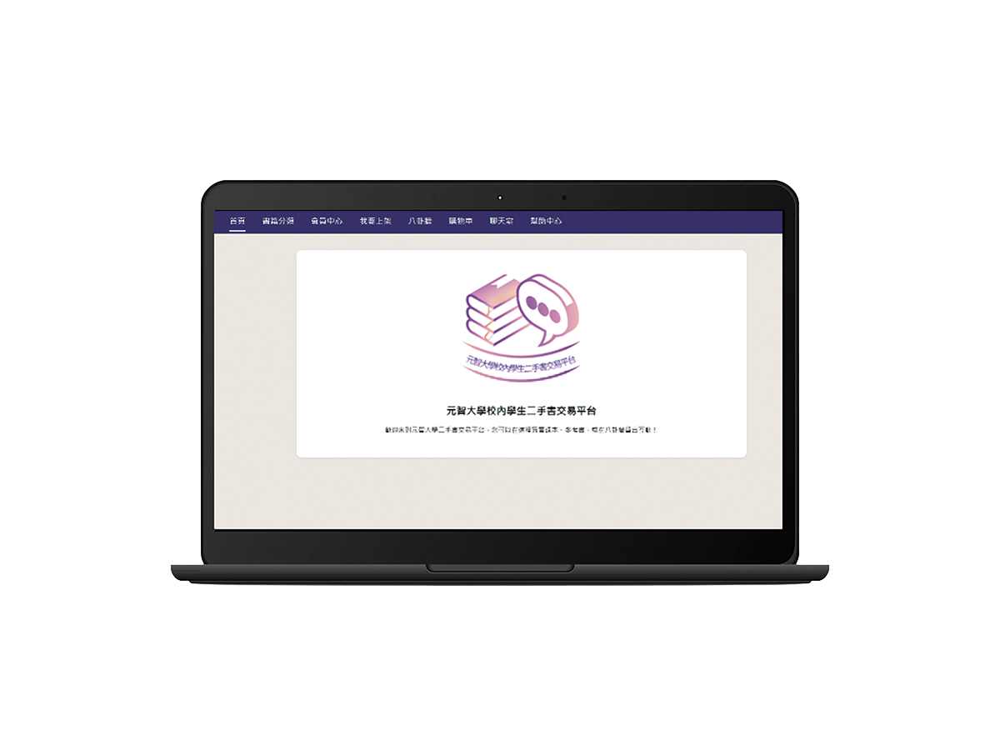
元智二手書交易平台
專為本校學生打造的網路書籍交易平台，解決圖書館書籍短缺及新書昂貴的問題。提供面交與運送兩種交易方式，對社恐人士特別友善。
- 科系分類檢索，買家能精準找書。
- 設置匿名「八卦牆」，24小時自動刪除留言。
- 負責區塊：購物車、聊天室及幫助中心開發。
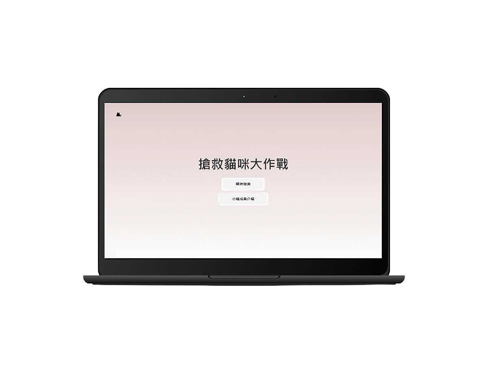
搶救貓咪大作戰
SDGs 目標 4以「教育」為核心的互動網頁，希望透過對話框遊戲，讓民眾在接觸流浪貓時能有正確的互動方式與餵食觀念，從錯誤選項中學習貓咪知識。
- 地圖場景互動，帶動故事情節。
- 對話問答機制，答錯即顯示詳解知識。
- 系統評估玩家是否具備養貓條件。
- 負責區塊：核心程式設計。
影片 Video
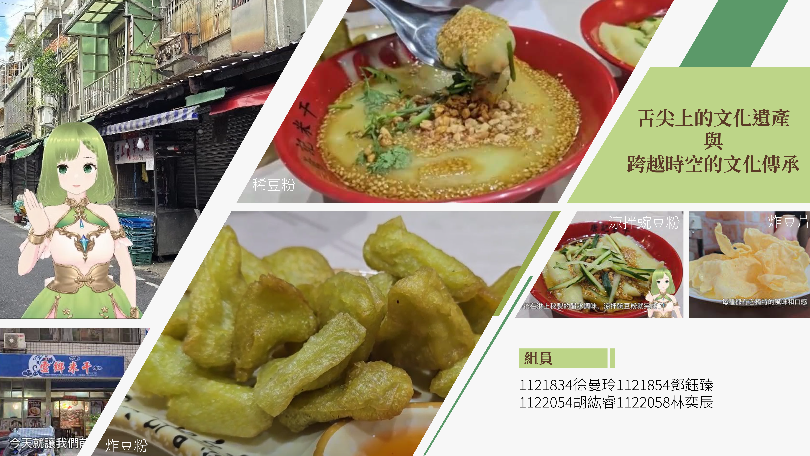
龍岡豌豆粉
影片在地美食紀錄短片，運用鏡頭捕捉龍岡豌豆粉的製作過程與人文風情。

動畫設計作品
動畫動態圖像設計與角色動畫，展現流暢的視覺節奏與故事張力。